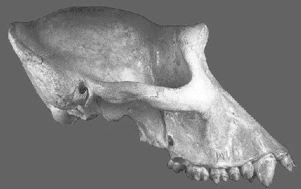
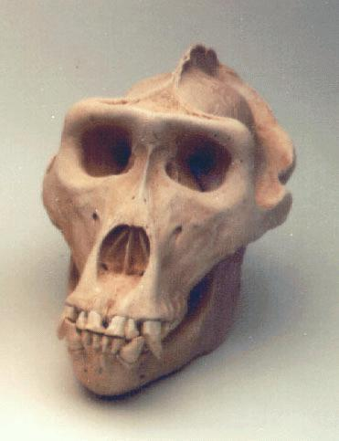

Crânio de gorila
Vista lateral do crânio de uma fêmea de gorila.
Vista frontal do crânio de um macho de gorila. (Imagem cortesia de Skullduggery)

Os gorilas são os primatas vivos mais grandes. Os machos crescem consideravelmente maiores do que as fêmeas.
O tamanho do cérebro dos gorilas média 500 cc, mas os machos, sendo maiores, tendem a ter cérebros maiores do que as fêmeas. Várias fontes listam o tamanho máximo do cérebro dos gorilas como 650 cc, 700 cc, ou, no caso de um espécime excepcional, 752 cc (Tobias, 1964).
Portanto, os crânios de machos de gorila se sobrepõem aos crânios de Homo habilis em tamanho cerebral, mas isso ocorre principalmente porque eles são muito maiores do que qualquer hominídeo fóssil. Quando se faz uma correção para o seu enorme tamanho corporal, os cérebros de gorila são do mesmo tamanho ou um pouco menores do que os dos chimpanzés. Além disso, os crânios de machos de gorila têm uma aparência muito diferente dos de Homo fósseis. Eles têm cristas e cristas de osso proeminentes, enquanto os crânios de Homo habilis têm poucas ou nenhuma crista e são muito mais arredondados.
Referências
Tobias P.V. (1964): The Olduvai bed I hominine with special reference to its cranial capacity. Nature, 202:3-4.
Esta página faz parte do FAQ de Hominídeos Fósseis no Arquivo talk.origins.
Página Inicial |
Espécies |
Fósseis |
Criacionismo |
Leitura |
Referências
Ilustrações |
O que há de novo |
Feedback |
Pesquisa |
Links |
Ficção
http://www.talkorigins.org/faqs/homs/gorilla.html, 04/28/97
Copyright © Jim Foley
|| Envie-me um e-mail